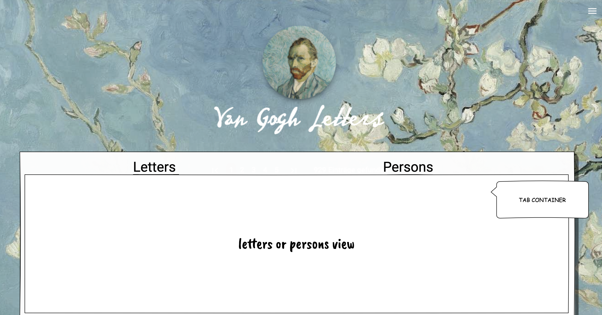
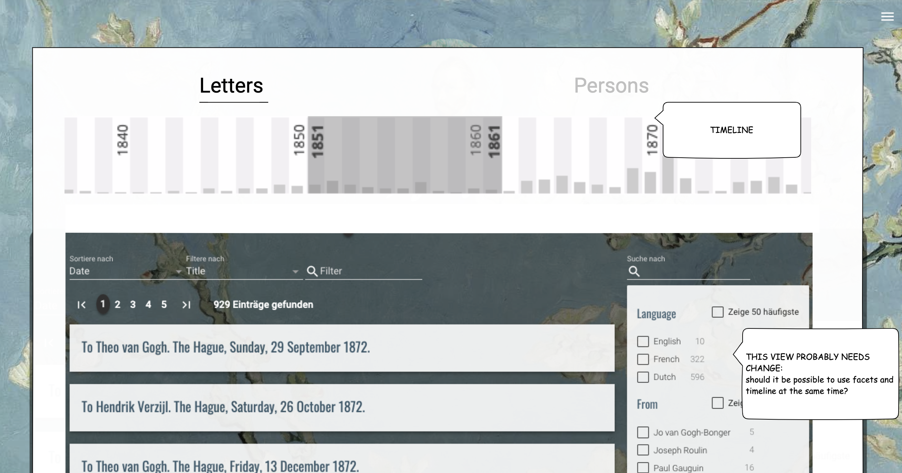
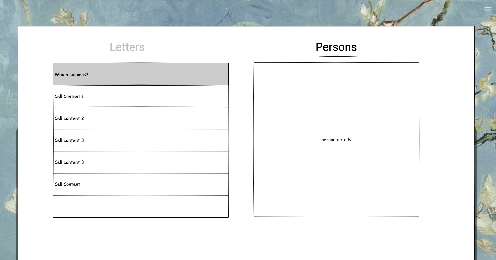

container

Modify with TabContainer to allow switching between Letters and Persons view.
Default: Letters?
letters

suggested layout for a view with timeline.
Timeline allows to search by narrowing (widening) the period of time.
Question:
- should facet searching be available at the same time?
- should facet searching go into expandable ?
letters (1)

Persons View
Show grid or table-grid on the left
Show details for clicked item to the right